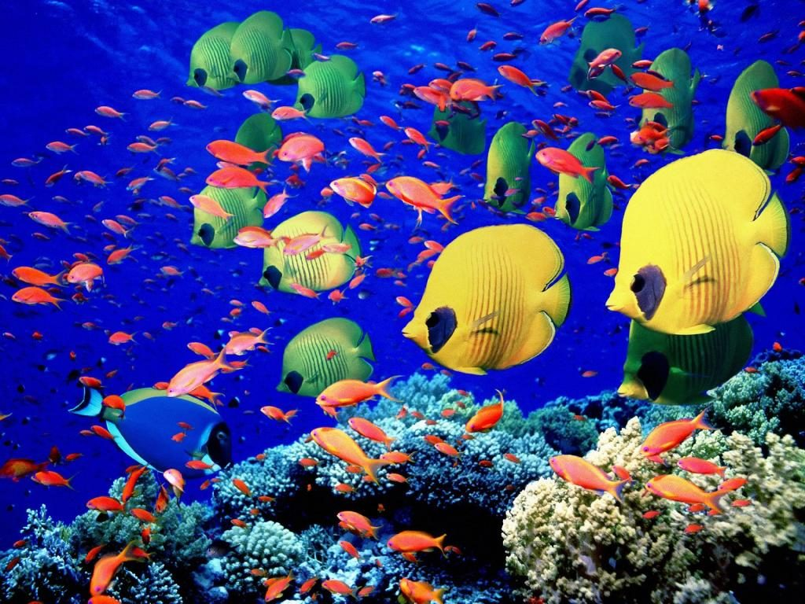
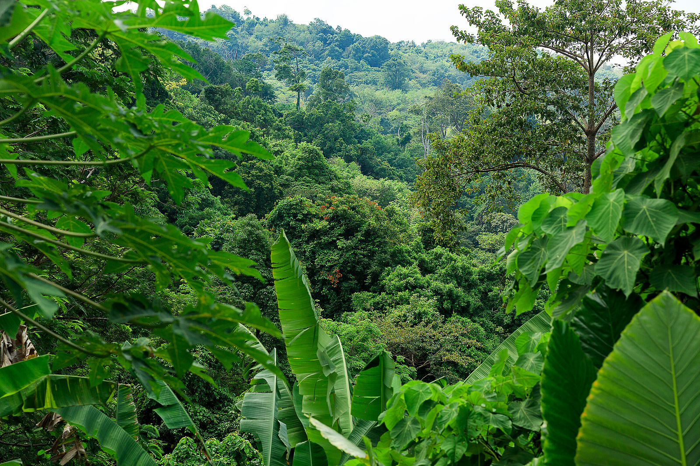
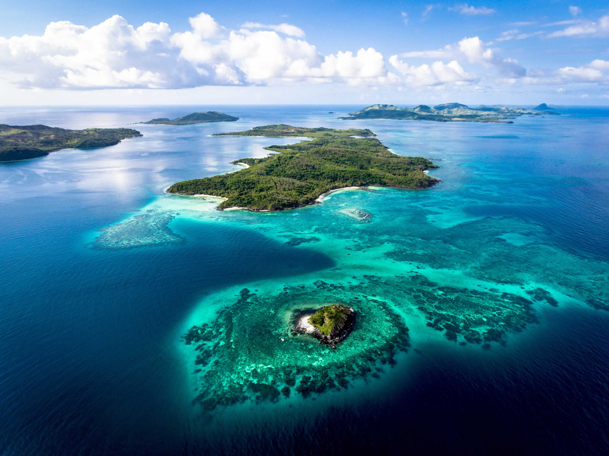
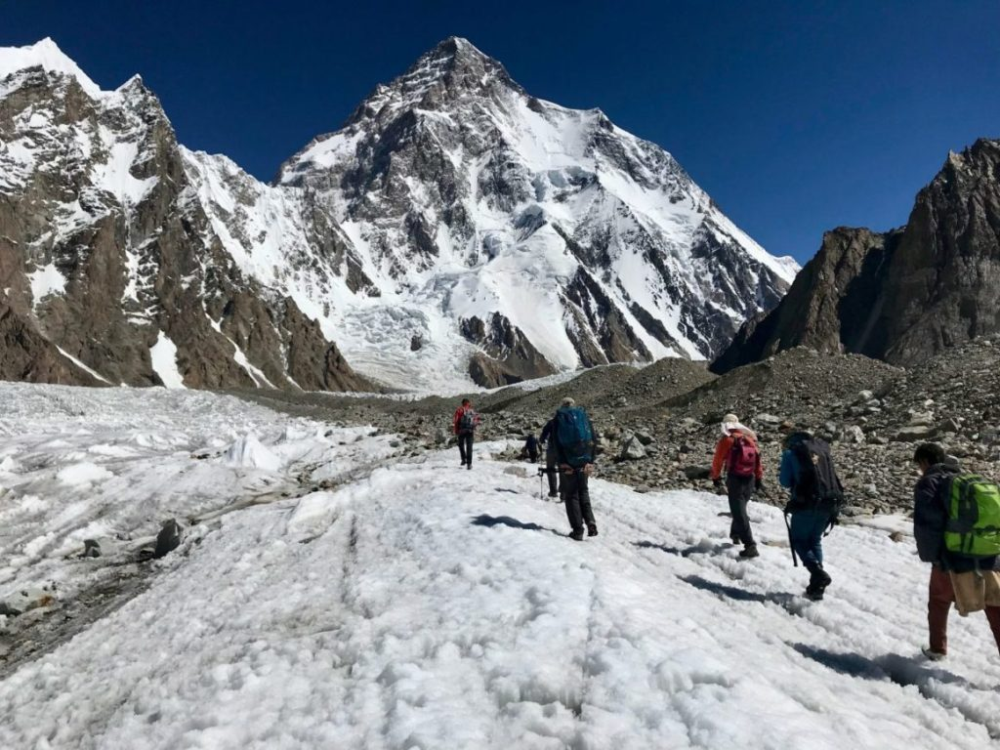

Adventure Offerings
JacKr prides itself on educating all their clients on what adventures are provided and what can be expected on a chosen adventure. Jac is constantly changing and seeking to innovate adventures that offer the ultimate in adventure excitement in a fun and safe way. Past adventures offered include JacKr's Spelunking!, EYA! bka Experience Your Aquarium!, Skip 2 My Cay! aka Island Hopping, and JT,B! bka Just Trek Baby! adventures.
-

EYA!™
Own an aquarium? Enjoy visiting major aquariums? Love to visit the tropical fish store? Is the answer...YES! Come experience those questions...LIVE AND IN LIVING COLOR!
-

Spelunking!™
Sure. The tourist caves are beautiful, fun, and unique to visit. But why do the tourist thing when you can tame the wilds and mark new paths for future tourists to follow.
-

Skip 2 My Cay!™
What's the fun in just exploring that single island you flew into?! Why not explore a subset of that island's chain? so just take the opportunity to...Skip to My Cay!™
-

JT,B!™
"Just Trek Baby!™" is what we say here at Jac. Come test your fortitude with treks that make you forget that the word civilization even exists.
Jac will handle all your cravings for adventure
EYA!™, Spelunking!™, Skip 2 My Cay!™, and JT,B!™ are just a sampling of the various exhilarating and thrilling eco-friendly global outdoor adventure.
Contact Us
2645 N High Street Columbus, OH 43202
1.844.932.2626
greatadventures@jac.biz
About Our Company
Founded in 2019 by a group of wild and crazy individuals for a tremendous love for the great outdoors and the many adventures the Earth has to offer. These fab people chose to start guiding friends, family, and co-workers on the many adventures that they had experienced over their many years. And due to the number of requests for guiding, Jac was born.